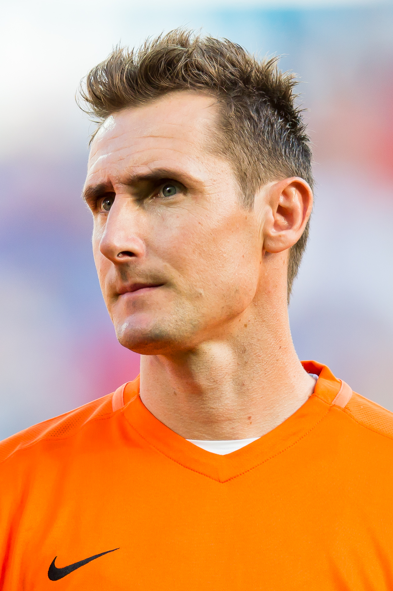
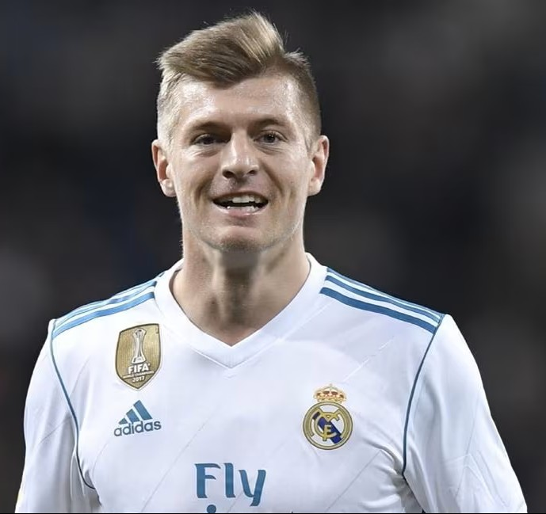

Franz Beckenbauer

Nascido em 1945, na cidade Munique, e é considerado um dos maiores jogadores da história do futebol. Atuando como defensor e meio-capista,
destacou-se pela elegância, liderança e inteligência em campo. Foi campeão da Copa do Mundo (FIFA 1974) conquistando o título em 1900.
Miroslav Klose

Nascido em 1978, sendo um dos maiores atacantes da história da Alemanha, sendo conhecido pelo seu otimo posicionamento e eficiência nas
finalizações, marcou seu nome ao se torna o maior artilheiro da história da Copa do Mundo, com 16 gols.
Toni Kroos

Nascido em 1990, sendo um dos principais meio-campistas do futebol moderno. Reconhecido pelos passes precisos, visão de jogo e tranquilidade em campo, conquistou diversos títulos importantes no futebol europeu. Está entre um dos maiores capeões da UEFA Champions League.
Jamel Musiala

Nascido em 2003, sendo a representa da nova geração do futebol alemão. Com grande habilidade, velocidade e criatividade, tornou-se um dos principais
jogadores da seleção ainda jovem. Suas atuações em destaque fizeram dele uma das maiores esperanças da Alemanha.
Quantos titulos a Alemanha ganhou da copa
Uma das maiores seleções da história
4 títulos: 1945, 1974, 1990, 2014
4 vices: 1966, 1982, 1986, 2002
Destaque por consistências e muitas semifinais
jogadores históricos:Beckenbauer, Ger Müller, Matthäus, Klose
Momento marcante: 7x1 no Brazil (2014)
Organização do campeonatos internos
A seleção alemã se destaca historicamente por sua disciplina tática, eficiência em decisões, consistência
ao longo das gerações e prensença frequentes nas fases finais das competições
Envolução das Regras
Inicialmente, os jogos eram disputados em ida e volta. Em caso de empate, Havia prorrogação e, em alguns
até sorteio. Após a final de 1977 entre 1.FC köln e Herthan BSC precisar se repetida, a federação
aboliu esse modelo. Desde 1991, os jogos são decididos por prorrogação e pênaltis.